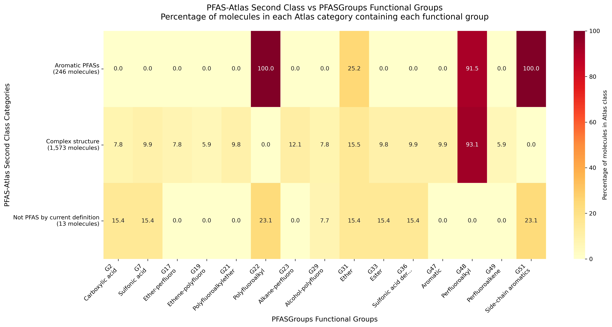
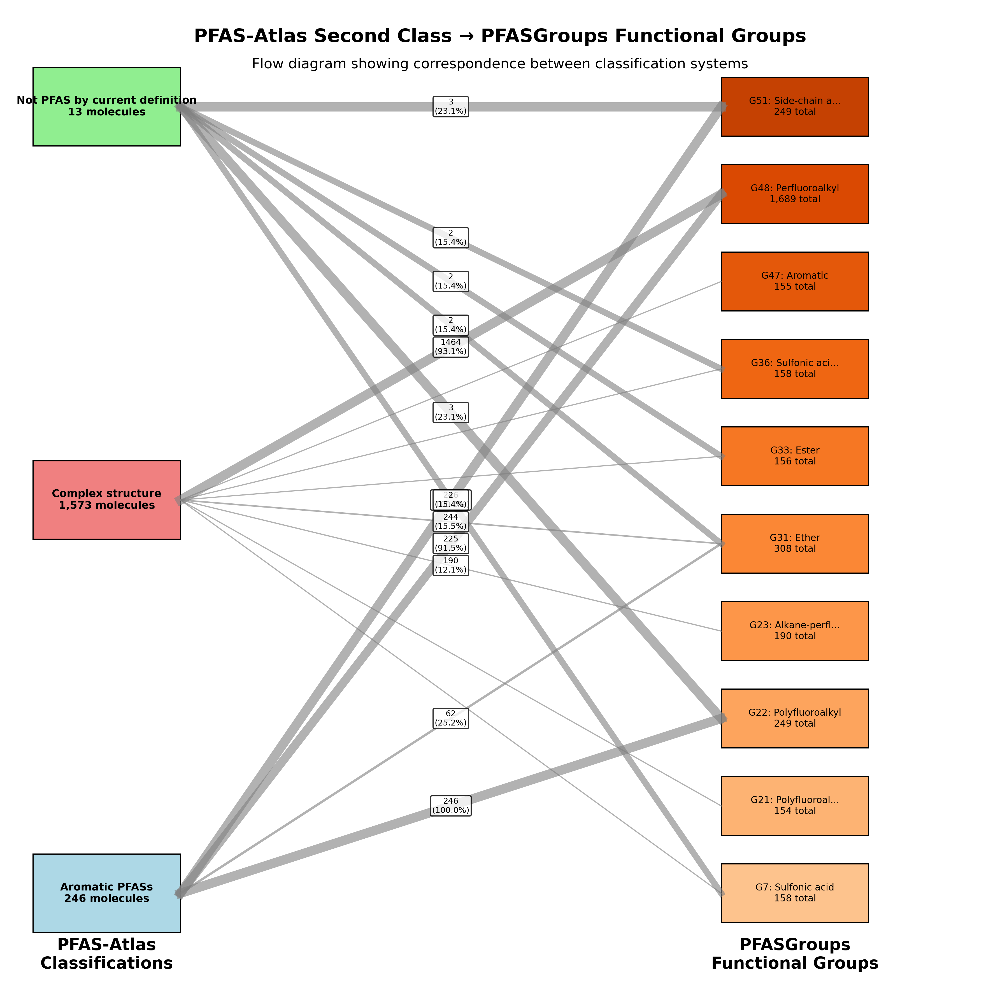

This analysis examines how PFAS-Atlas second class classifications correspond to PFASGroups functional group detections across 1,832 molecules.
| Atlas Category | Molecules | Percentage | Top Functional Groups |
|---|---|---|---|
| Aromatic PFASs | 246 | 13.4% | G22 (Polyfluoroalkyl), G51 (Side-chain aromatics), G48 (Perfluoroalkyl) |
| Complex structure | 1,573 | 85.9% | G48 (Perfluoroalkyl), G31 (Ether), G23 (Alkane-perfluoro) |
| Not PFAS by current definition | 13 | 0.7% | G22 (Polyfluoroalkyl), G51 (Side-chain aromatics), G7 (Sulfonic acid) |


Analysis generated on 2025-12-13 using PFASGroups benchmark data